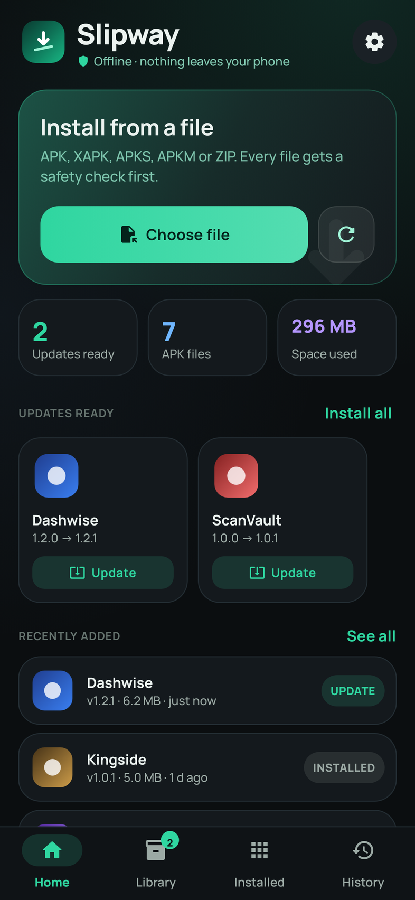
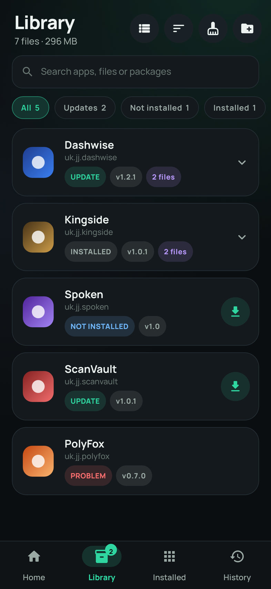
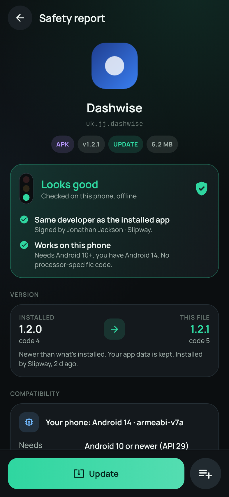
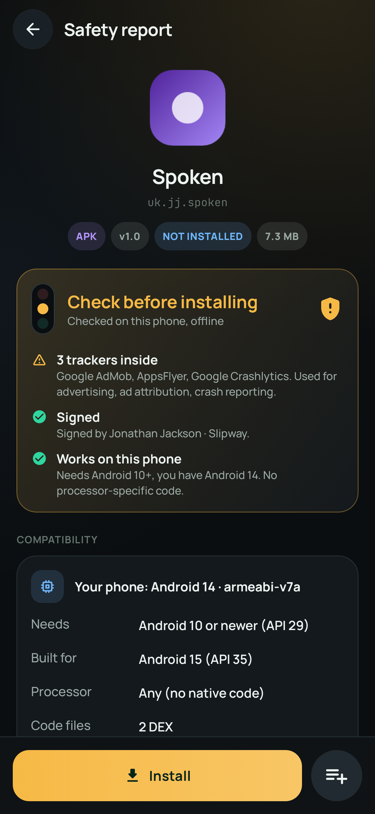
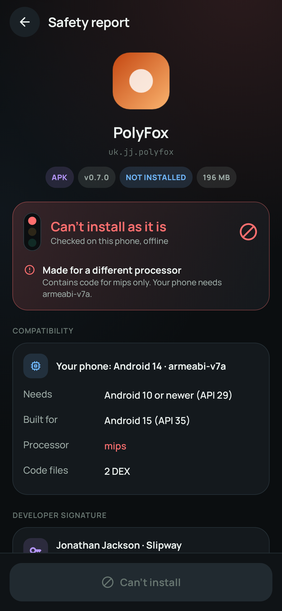
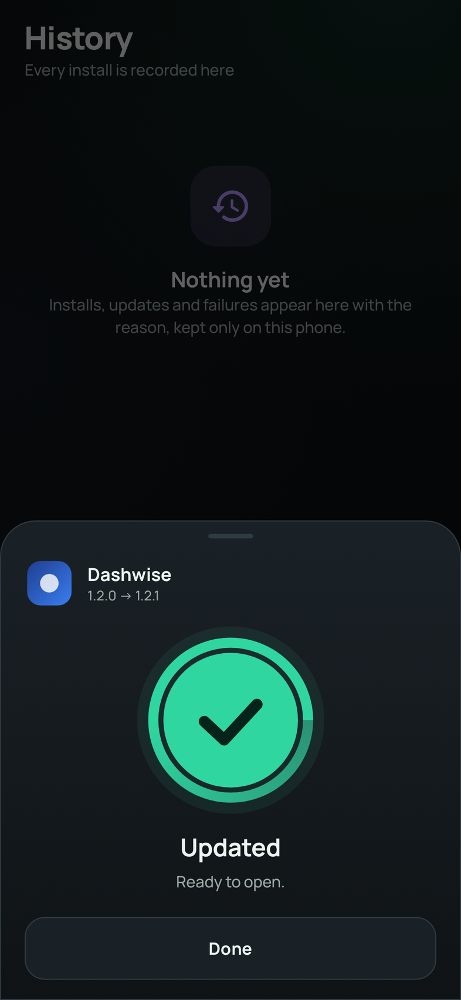
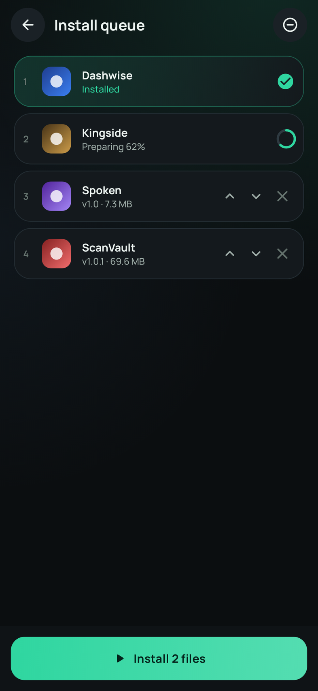
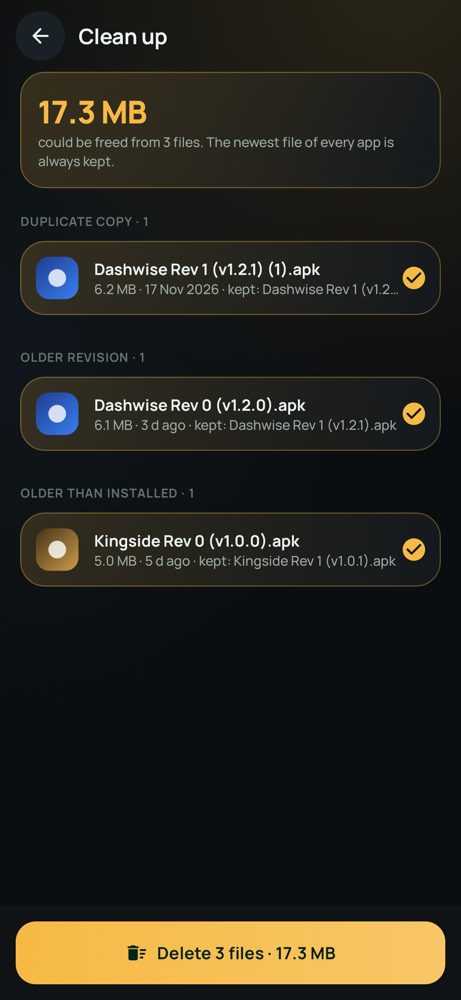
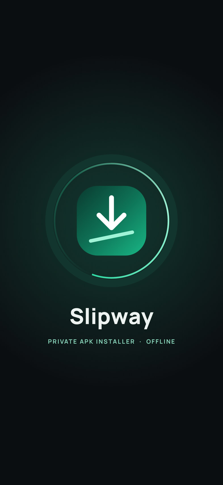
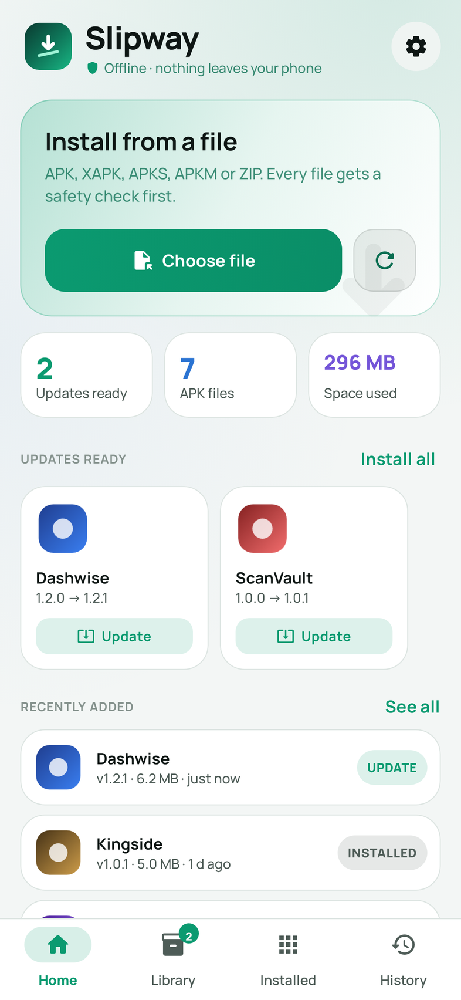

Install any APK, and know what it is first.
Slipway installs APK files and the bundles apps now come in: XAPK with its game data, APKS, APKM and ZIP. Before anything installs you get a safety report: a red, amber or green verdict, every permission in plain English, the developer's signature, whether it suits your phone and which trackers are built in.
Your APK files become a library grouped by app, with every revision and whether each one is an update, already installed or older. Install one, or tick ten and let the queue do the rest. Slipway has no internet access, so nothing about your files or apps can ever leave your phone.
Slipway installs app files you already have. Install only apps you have the right to use. What the law says
- Version 1.0.0
- Android 10 or later
- 3.2 MB
Free, with nothing to unlock. No adverts, no account with the developer, no tracking. Compare or read the release notes.
Chrome may say the file might be harmful. It shows this for app files that do not come from Google Play. Choose Download anyway.

- No internet accessSlipway cannot go online at all.
- No advertsNone in the app and none on this site.
- Nothing to buyEvery feature is free, with no trial and no subscription.
- No accountNothing to sign up for.
A look inside
These are the real screens, drawn from the app's own code with made-up APK files. Swipe or scroll sideways to see them all.









How it works
Android installs apps through its own installer. Slipway reads each file first, explains what is in it, then hands it to Android, all on your phone.
Choose
Open a file, share one to Slipway, or pick from your library of APK files grouped by app and revision.
Check
The safety report shows the verdict, compatibility, signature, trackers and every permission before anything installs.
Install
Tap Install. Bundles get just the parts your phone needs, game data is copied, and the result goes in your history.
Everything is in, and all of it is free
Nothing below is held back for a paid tier, because there is no paid tier.
Installing
- Every format
- APK, XAPK with OBB game data, APKS, APKM and ZIP files of APKs. One Install button works out the type.
- Only the parts you need
- Bundles install the base and the pieces for your phone's processor, never other phones' code.
- Errors in plain English
- Android's install failures translated into what happened and how to fix it.
- Queue and one-tap updates
- Install many files in order, with retry. On Android 12 and later, updates to apps Slipway installed need no extra prompt.
The safety report
- Red, amber or green
- A clear verdict with the reasons, checked offline before every install.
- Permissions explained
- Every permission the app asks for, in plain English, powerful ones first.
- Signature and version
- The developer's certificate, whether it matches the installed app, and whether this is an update, a reinstall or older.
- Trackers and fingerprints
- 51 known advertising, analytics and crash-reporting kits found inside the app, and the file's SHA-256 with a paste-to-check box.
Your library
- Grouped by app and revision
- Rev 0, Rev 1 and every version of each app together, tagged Update, Installed, Older, Not installed or Problem.
- Folders you choose
- Slipway sees only the folders you pick, or every folder if you switch that on.
- Clean up
- Duplicate copies and older revisions found for you, deleted only when you confirm.
- Alerts, widget and tile
- Optional alerts when a new APK arrives, a home-screen widget and a Newest APK tile.
Your apps
- Installed apps
- Search, filter by where they came from, open, see details or uninstall.
- Batch uninstall
- Tick several apps and remove them one after another.
- Back up an app
- Save any installed app as an .apk, or a complete .apks bundle for split apps.
- History, lock and themes
- Every install recorded with the reason, saved as PDF or CSV; app lock; Graphite, black, wallpaper and light themes.
Private by design
No internet at all
Slipway does not hold Android's internet permission. It cannot send anything anywhere.
Nothing about you
No adverts, no account, no analytics and no crash reports. Your files, apps and history stay on your phone.
Asks only when needed
All files access, Shizuku mode, alerts and app lock are each explained first, and every one is optional.
Use it within the law
Slipway is for installing apps you are allowed to have: free apps, open-source apps, your own apps, and copies you are entitled to keep.
- Copyright, Designs and Patents Act 1988. Apps are protected by copyright. Installing or using a pirated copy of a paid app, or one shared without its maker's permission, can infringe copyright (section 16), and dealing in infringing copies can be a criminal offence (section 107). Install only apps you have the right to use.
Laws differ in other countries. If you are not in the UK, the rules where you are apply. Read the terms of use.
Installing and updating
Slipway is not on Google Play, so your phone asks a couple of extra questions the first time.
Download the app file
Tap Download on your phone. The file is called Slipway.apk and is about 3.2 MB. If Chrome says the file might be harmful, choose Download anyway. First tick the box to say you will use the app within the law.
Allow the install
Open the file. The first time, Android asks you to allow your browser to install apps. Allow it, go back and tap Install. If Google Play Protect steps in, choose More details, then Install anyway.
Updating later
Slipway never goes online, so it cannot check for updates itself. Settings, About, Check for a newer version opens the release notes in your browser. Install the new file over the old one and your library folders, settings and history are kept.
Version 1.0.0, released 26 November 2026. See the release notes, or check your download.
Questions
Is Slipway really free?
Yes. There is no paid version, no trial, no subscription and no adverts, and nothing in the app is locked.
Is it on Google Play?
No. Slipway is a personal project and is downloaded from this site as an Android app file. It needs Android 10 or later.
Which files can it install?
Plain APK files, XAPK bundles (including their OBB game data), APKS bundles such as those saved by Unbox or SAI, APKM files from APKMirror that are not locked, and ZIP files holding APKs.
Why does Android still ask me to confirm?
Android asks you to confirm installs from any app other than Play, which keeps you in control. On Android 12 and later, updates to apps that Slipway installed can go through without that extra prompt. Shizuku mode, which is optional, removes the prompt for every install.
What does the verdict mean?
Green means nothing worrying was found. Amber means something deserves a look, such as trackers, powerful permissions or a debug build. Red means Android would refuse it, or it is signed by a different developer from the app you have, which can mean a tampered copy.
Can Slipway tell if an app is a virus?
No app can promise that. Slipway shows you the facts it can check offline: who signed it, what it asks for, which known trackers it carries and whether it matches the app you have. Only install apps from sources you trust.
Why can't I install an older version?
Android never lets an older version replace a newer one. Slipway tells you before you try, and offers to uninstall the newer one first, which deletes that app's data.
What is Shizuku mode?
Shizuku is a separate free app that lets other apps use Android's own install tool. With it switched on, Slipway can install a whole queue without a prompt for each app. It is off unless you switch it on.
Does it work on an iPhone?
No. Slipway is for Android phones and tablets only.
Who made it?
Slipway is made by Jonathan Jackson, an independent developer in the United Kingdom.
Install with your eyes open
Free, with no adverts and nothing to unlock. Made by the developer of several other free Android apps: see them all.